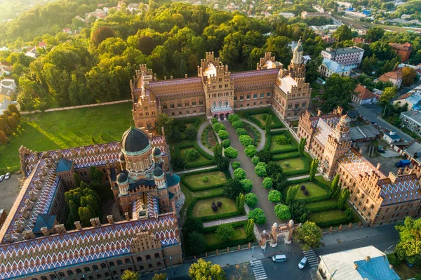

«Чернівці – це місто, де недільний день починався з Шуберта, а закінчувався дуеллю. Це місто – на півдорозі між Києвом та Бухарестом, між Краковом і Одесою – було негласною столицею Європи, де співали кращі колоратурні сопрано, де тротуари підмітали букетами троянд і де книгарень було більше, ніж кав’ярень. Чернівці – це був корабель задоволень з українською командою, німецькими офіцерами і єврейськими пасажирами на борту, який під австрійським прапором постійно тримав курс між Заходом і Сходом»
австрійський журналіст Георг Гайнцен
Наш сайт допоможе вам краще пізнати цей чудовий край.
Дізнайтеся про захоплюючу історію Чернівців, від перших згадок до сьогодення.
Ознайомтеся з головними пам'ятками міста, які варто відвідати кожному.
Візьміть участь в опитуваннях і дайте свою оцінку розвитку міста.